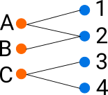
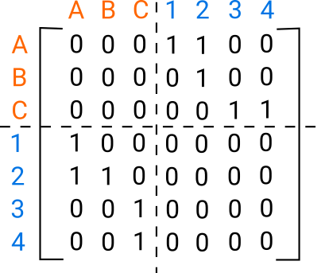
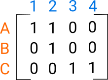
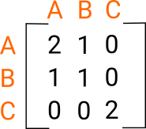

Representing Interaction Networks
Behavioural data can illuminate the structure of the underlying actors. For example looking at which products customers buy can help understand how both the products and customers interact. The same idea can apply to people who attend events, watch the same movie, or have authored a scientific paper together. There are a few ways to represent these kinds of interactions which gives a large toolbox of ways to approach the problem.
One way to view the relationship is as a bipartite graph. For example the nodes could be the products and the customers and there’s an edge between a customer and a product if they have bought them. You could then look at classifying customers and products as by clustering them using community detection. Some of them model the graph directly, like the Stochastic block model. This clustering could help with targeting and recommending products to customers.

The bipartite graph could also be represented by its adjacency matrix. The adjacency matrix underlies a lot of the algorithms for community detection such as Spectral clustering. Because there are no connections between customers and customers and products and products the matrix is 0 on these diagonal blocks. Because the graph is undirected the adjacency matrix is symmetric.

The adjacency matrix can be represented by it’s top right corner, the interaction between products and customers, A. A common approach for this is matrix factorisation where this matrix is decomposed into a product of matrices \(A = UV\). This can be thought of as an embedding; U embeds products and the adjoint of V embeds the customers. The items can then be clustered in the embedding space for example using k-means.

If you don’t care explicitly about the products you could just look at the customers. Two customers are similar if they’ve bought the same product. This can be explicitly constructed by counting the number of products they have in common, via the matrix product \(A A^{T}\). Then community detection algorithms could be run on the weighted graph (optionally removing the diagonal of self-links).

There are many more variations that can be made on this. The customers can be weighted by their activity so one very active customer doesn’t have disproportionate impact on the graph. Interactions on dynamic processes such as random walks, spin glasses and synchronisation can illuminate the communities. Any metadata, such as product features, can be used to help inform the community structure. Different types of interactions like detail views versus purchases could be used together. Consensus clustering could be used to create a sequence of new adjacency matrices to find communities in.
There are lots of different ways of viewing the same problem which gives a wide variety of techniques to approach it. Depending on your application you can pick models that are most appropriate.